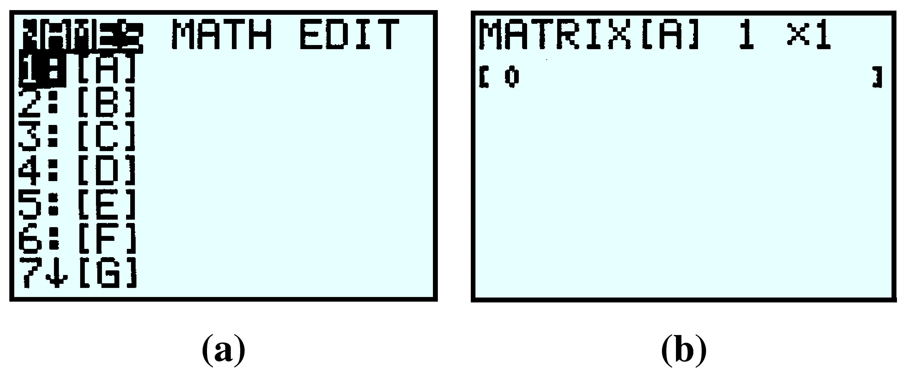
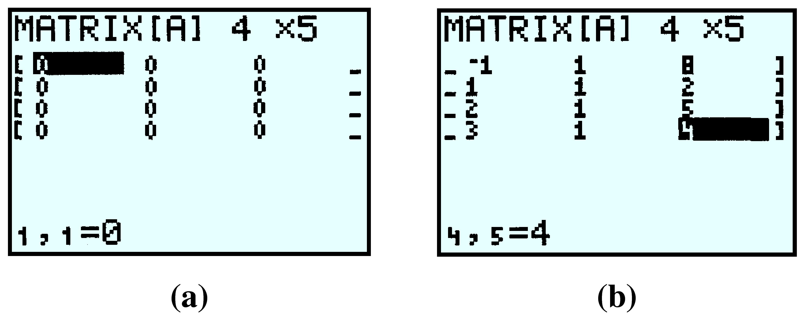
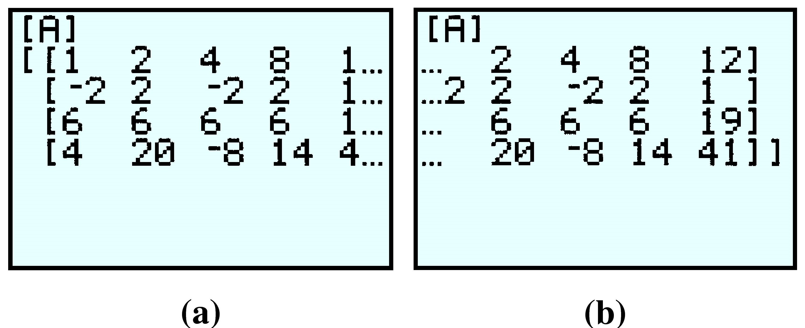
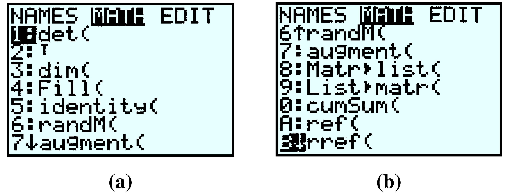

The augmented matrix is
\begin{equation*}
\left[ \begin{array}{@{}cccc|c@{}}
1 \amp 2 \amp 4 \amp 8 \amp 12 \\
-2\amp 2 \amp -2\amp 2 \amp 1 \\
6 \amp 6 \amp 6 \amp 6 \amp 19 \\
4 \amp 20 \amp -8\amp 14\amp 41
\end{array}\right]
\end{equation*}
We enter this matrix into the calculator as follows: First access the MATRIX menu by pressing 2nd x^-1 on a TI-84 orMATRX on a TI-83. You will see the menu shown in figure (a). We will use matrix [A], which is already selected, and we presss ENTER to EDIT (or enter) the matrix, shown in figure(b).

We want to enter a \(4\times 5\) matrix, so we press \(4\)ENTER\(5\)ENTER, and we see the display in figure (a) below. Now type in the first row of the matrix, pressing ENTER after each entry. The calculator automatically moves to the second row. Continue filling in the rest of the augmented matrix, as shown in figure (b).

To make sure you have entered the values correctly, press 2ndMODE to quit to the home screen, then open the matrix menu again. Press \(1\)ENTER to retrieve matrix [A]; the calculator display should look like figure (a) below. To check the rest of the matrix, press the right arrow key until you see the last column, as in figure (b).

Now we are ready to compute the reduced row echelon form of the matrix. Access the matrix menu again, but this time press the right arrow once to highlight MATH as shown in figure (a). Scroll down until the rref( command is highlighted, as shown in figure (b), and press ENTER.

Finally, enter matrix [A] after the rref( command by pressing 2nd x^-1 \(1\)) ENTER or \(MATRX\) \(1\)) ENTER. The display should now look like figure (a) below. The last column of the matrix gives decimal approximations for the solutions.
The calculator can also display the rational form of the solutions: Press MATH ENTER ENTER to see figure(b). The reduced row echelon form of the augmented matrix is thus
\begin{equation*}
\left[ \begin{array}{@{}cccc|c@{}}
1 \amp 0 \amp 0 \amp 0 \amp 2 \\
0 \amp 1 \amp 0 \amp 0 \amp 1/3 \\
0 \amp 0 \amp 1 \amp 0 \amp -2/3 \\
0 \amp 0 \amp 0 \amp 1 \amp 3/2
\end{array}\right]
\end{equation*}
and the solution is the ordered four-tuple \(\left(2, \dfrac{1}{3}, \dfrac{-2}{3}, \dfrac{3}{2}\right)\text{.}\) You can verify that these values satisfy each of the original four equations.